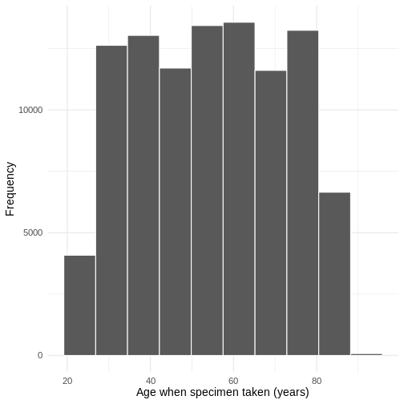

Logistic Regression
Last updated on 2024-12-04 | Edit this page
Estimated time: 120 minutes
Overview
Questions
- How can I identify factors for antibiotic resistance?
- How can I check the validity of model?
Objectives
- To be able to construct regression models for a binary outcome
- To be able to calculate predicted variables and residuals
- To be able to present model outcomes using Broom
Content
- Exploratory Data Analysis
- Model Creation and Estimation
- Reporting the Logistic Regression Results
Data
R
# We will need these libraries and this data later.
library(aod)
library(broom)
library(ggplot2)
library(lubridate)
library(odds.n.ends)
library(tidyverse)
amrData <- read.csv("data/dig_health_hub_amr.csv")
The data used in this episode was provided by Simon Thelwall from the UKHSA. It has been created to represent the sort of data that might be obtained from the Second Generation Surveillance System (SGSS). The data has 100,000 rows of 12 variables.
Exploratory Data Analysis
We can preview our data by using ‘head’:
R
head(amrData)
OUTPUT
id dob spec_date sex_male region had_surgery_past_yr
1 1 1981-04-04 2014-05-25 1 London 0
2 2 1969-05-22 2014-05-25 0 East 0
3 3 1935-11-20 2014-05-25 0 London 1
4 4 1967-05-19 2014-05-25 1 London 0
5 5 1961-06-30 2014-05-25 0 North West 0
6 6 1987-01-11 2014-05-25 1 North East 0
ethnicity imd organism coamox
1 Other ethnic group 4 E. coli 1
2 Other ethnic group 3 E. coli 0
3 Black, Black British, Black Welsh, Caribbean or African 2 E. coli 1
4 Mixed or Multiple ethnic groups 5 E. coli 0
5 Mixed or Multiple ethnic groups 4 E. coli 0
6 Mixed or Multiple ethnic groups 4 E. coli 0
cipro gentam
1 0 0
2 0 0
3 0 0
4 0 0
5 0 0
6 0 0We can also request information about variable names and data types:
R
sapply(amrData, class)
OUTPUT
id dob spec_date sex_male
"integer" "character" "character" "integer"
region had_surgery_past_yr ethnicity imd
"character" "integer" "character" "integer"
organism coamox cipro gentam
"character" "integer" "integer" "integer" We can see that dates are currently stored as the char data type. We also do not know the age of the participant when the sample was taken.
R
# Calculate age (in years) as of their last birthday and add as an additional variable to our data.
# The %--% and %/% are synax specific to lubridate.
# In the first part we are asking it to find the difference between the two dates.
# We are then rounding down to the nearest year.
amrData <- amrData %>%
mutate(
age_years_sd = (dob %--% spec_date) %/% years(1)
)
We can also convert ‘spec_date’, the date the specimen was taken from text to a date:
R
# Convert char to date and store as additional variable
amrData <- amrData %>%
mutate(
spec_date_YMD = as.Date(amrData$spec_date)
)
We can use a histogram to explore the age distribution of the participants:
R
# histogram of age
ageHisto <- amrData %>%
ggplot(aes(x = age_years_sd)) +
geom_histogram(bins = 10, color = "white") +
theme_minimal(base_size = 14, base_family = "sans") +
labs(x = "Age when specimen taken (years)", y = "Frequency")
ageHisto
 We can also look at where the specimens were processed:
R
xtabs(~region, data = amrData)
OUTPUT
region
East East Midlands London
11084 11160 11253
North East North West South East
11082 10919 11101
South West West Midlands Yorkshire and The Humber
11278 11032 11091 and for which organism:
R
xtabs(~organism, data = amrData)
OUTPUT
organism
E. coli
100000 In addition, we can use cross-tabulation to identify if the specimen indicated resistance to one or more of Coamoxiclav, Gentamicin and Ciprofloxacin for the participants:
R
xtabs(~ coamox + cipro + gentam, data = amrData)
OUTPUT
, , gentam = 0
cipro
coamox 0 1
0 61844 5814
1 24319 3109
, , gentam = 1
cipro
coamox 0 1
0 2815 362
1 1510 227We can see from our table that only 227 participants indicated reistance to Coamoxiclav, Gentamicin and Ciprofloxacin. Coamoxiclav appears to have the highest individual indication of resistance. We will explore indicators to Coamoxiclav first.
Model Creation and Estimation
As the dependent variable we want to explore is binary (0,1), we will use a binomial generalised linear model.
R
coamox_logit <- glm(coamox ~ age_years_sd + sex_male, data = amrData, family = "binomial")
summary(coamox_logit)
OUTPUT
Call:
glm(formula = coamox ~ age_years_sd + sex_male, family = "binomial",
data = amrData)
Coefficients:
Estimate Std. Error z value Pr(>|z|)
(Intercept) -3.2215791 0.0284626 -113.186 < 2e-16 ***
age_years_sd 0.0404280 0.0004449 90.867 < 2e-16 ***
sex_male 0.0540494 0.0146011 3.702 0.000214 ***
---
Signif. codes: 0 '***' 0.001 '**' 0.01 '*' 0.05 '.' 0.1 ' ' 1
(Dispersion parameter for binomial family taken to be 1)
Null deviance: 120724 on 99999 degrees of freedom
Residual deviance: 111460 on 99997 degrees of freedom
AIC: 111466
Number of Fisher Scoring iterations: 4In this initial model focusing on demographic indicators, age at time of sample being taken and whether or not the participant is male both seem to be statistically significant.
age_years_sd: For every unit increase in age_years_sd the log-odds of Coamoxiclav resistance increase by 0.0404280.
sex_male: The difference in the log-odds of Coamoxiclav resistance between males and non-males is 0.0540494.
Older participants and male participants have higher log-odds of Coamoxicalv resistance.
We can check to see that our indicators sex_male and age_years_sd are independent:
R
# check VIF for no perfect multicollinearity assumption
car::vif(coamox_logit)
OUTPUT
age_years_sd sex_male
1.000015 1.000015 We can also check the linearity of the variable age_years_sd
R
# make a variable of the logit of the predicted values
logit.use <- log(coamox_logit$fitted.values / (1 - coamox_logit$fitted.values))
# make a small data frame with the logit variable and the age predictor
linearity.data <- data.frame(logit.use, age = coamox_logit$model$age_years_sd)
# create a plot with linear and actual relationships shown
linearPlot <- linearity.data %>%
ggplot(aes(x = age, y = logit.use)) +
geom_point(aes(size = "Observation"), color = "blue", alpha = .6) +
geom_smooth(se = FALSE, aes(color = "Loess curve")) +
geom_smooth(method = lm, se = FALSE, aes(color = "linear")) +
theme_minimal(base_size = 14, base_family = "serif") +
labs(x = "Age in years on sample date", y = "Log-odds of coamox resistance predicted probability") +
scale_color_manual(name = "Type of fit line", values = c("red", "black")) +
scale_size_manual(values = 1.5, name = "")
linearPlot
OUTPUT
`geom_smooth()` using method = 'gam' and formula = 'y ~ s(x, bs = "cs")'
`geom_smooth()` using formula = 'y ~ x'
Challenge 1
Update the model coamox_logit to include had_surgery_past_yr as an independent variable. What is the log-odds reported and is it statistically significant?
You may choose to create a new glm:
R
coamox_surg_logit <- glm(coamox ~ age_years_sd + sex_male + had_surgery_past_yr, data = amrData, family = "binomial")
summary(coamox_surg_logit)
OUTPUT
Call:
glm(formula = coamox ~ age_years_sd + sex_male + had_surgery_past_yr,
family = "binomial", data = amrData)
Coefficients:
Estimate Std. Error z value Pr(>|z|)
(Intercept) -3.2407115 0.0286059 -113.288 < 2e-16 ***
age_years_sd 0.0404424 0.0004451 90.870 < 2e-16 ***
sex_male 0.0538298 0.0146056 3.686 0.000228 ***
had_surgery_past_yr 0.1802123 0.0238522 7.555 4.18e-14 ***
---
Signif. codes: 0 '***' 0.001 '**' 0.01 '*' 0.05 '.' 0.1 ' ' 1
(Dispersion parameter for binomial family taken to be 1)
Null deviance: 120724 on 99999 degrees of freedom
Residual deviance: 111404 on 99996 degrees of freedom
AIC: 111412
Number of Fisher Scoring iterations: 4had_surgery_past_yr: The difference in the log-odds of Coamoxiclav resistance between those who have had surgery in the past year and those who have not is 0.1802123. It is statistically significant.
You may also want to check for culticollinearity:
R
car::vif(coamox_surg_logit)
OUTPUT
age_years_sd sex_male had_surgery_past_yr
1.000156 1.000018 1.000144 As the value of GVIF is lower than 4, it suggests that the assumption of independnce between the variables is held.
Incorporating a multi-level factor
So far we have considered binary and continuos variable indicators in our model(s). Our data set also contains some categorical variables: region, ethinicity and imd.
We are going to incorporate region into our model:
R
# To include reporting for all regions I will include the 0 flag
coamox_region_logit <- glm(coamox ~ 0 + age_years_sd + sex_male + region, data = amrData, family = "binomial")
summary(coamox_region_logit)
OUTPUT
Call:
glm(formula = coamox ~ 0 + age_years_sd + sex_male + region,
family = "binomial", data = amrData)
Coefficients:
Estimate Std. Error z value Pr(>|z|)
age_years_sd 0.040432 0.000445 90.867 < 2e-16 ***
sex_male 0.054155 0.014602 3.709 0.000208 ***
regionEast -3.246673 0.035328 -91.900 < 2e-16 ***
regionEast Midlands -3.213569 0.035077 -91.616 < 2e-16 ***
regionLondon -3.204244 0.034972 -91.625 < 2e-16 ***
regionNorth East -3.219060 0.035140 -91.606 < 2e-16 ***
regionNorth West -3.217271 0.035244 -91.285 < 2e-16 ***
regionSouth East -3.183229 0.035058 -90.799 < 2e-16 ***
regionSouth West -3.222338 0.035057 -91.917 < 2e-16 ***
regionWest Midlands -3.236012 0.035275 -91.736 < 2e-16 ***
regionYorkshire and The Humber -3.255309 0.035302 -92.213 < 2e-16 ***
---
Signif. codes: 0 '***' 0.001 '**' 0.01 '*' 0.05 '.' 0.1 ' ' 1
(Dispersion parameter for binomial family taken to be 1)
Null deviance: 138629 on 100000 degrees of freedom
Residual deviance: 111452 on 99989 degrees of freedom
AIC: 111474
Number of Fisher Scoring iterations: 4It initially seems that all regions are significant and have a negative log-odds of Coamoxiclav resistance.
We can use the Wald test to explore the overall effect of region. We will use the wald.test function of the aod library. The order in which the coefficients are given in the table of coefficients is the same as the order of the terms in the model. This is important because the wald.test function refers to the coefficients by their order in the model. We use the wald.test function. b supplies the coefficients, while Sigma supplies the variance covariance matrix of the error terms, finally Terms tells R which terms in the model are to be tested, in this case, terms 3 to 11, are the three terms for the different regions.
R
# model with just the regions added
wald.test(b = coef(coamox_region_logit), Sigma = vcov(coamox_region_logit), Terms = 3:11)
OUTPUT
Wald test:
----------
Chi-squared test:
X2 = 12815.9, df = 9, P(> X2) = 0.0The chi-squared test statistic of 12815.9, with nine degrees of freedom is associated with a p-value of 0.00 indicating that the overall effect of region is statistically significant.
Challenge 2
Update the model you created in Challenge 1 to include either ethnicity or imd as an independent variable. What is the log-odds reported and is it statistically significant?
If you chose to incorporate imd, this would first need to be converted to a factor
R
amrData$imd <- factor(amrData$imd)
coamox_surg_imd_logit <- glm(
coamox ~ age_years_sd + sex_male + had_surgery_past_yr + imd,
data = amrData,
family = "binomial"
)
summary(coamox_surg_imd_logit)
OUTPUT
Call:
glm(formula = coamox ~ age_years_sd + sex_male + had_surgery_past_yr +
imd, family = "binomial", data = amrData)
Coefficients:
Estimate Std. Error z value Pr(>|z|)
(Intercept) -3.2405156 0.0320951 -100.966 < 2e-16 ***
age_years_sd 0.0404419 0.0004451 90.866 < 2e-16 ***
sex_male 0.0538963 0.0146067 3.690 0.000224 ***
had_surgery_past_yr 0.1801131 0.0238532 7.551 4.32e-14 ***
imd2 -0.0135384 0.0231010 -0.586 0.557840
imd3 -0.0044812 0.0230452 -0.194 0.845821
imd4 -0.0046000 0.0230556 -0.200 0.841857
imd5 0.0216405 0.0230414 0.939 0.347627
---
Signif. codes: 0 '***' 0.001 '**' 0.01 '*' 0.05 '.' 0.1 ' ' 1
(Dispersion parameter for binomial family taken to be 1)
Null deviance: 120724 on 99999 degrees of freedom
Residual deviance: 111401 on 99992 degrees of freedom
AIC: 111417
Number of Fisher Scoring iterations: 4As we did not include the 0 flag IMD quintile 1 has been used a reference for the other Quintiles. Quintiles 2 to 5 are not significantly significant. We may want to test that the coefficient for imd=1 is equal to the coefficient for imd=2. The first line of code below creates a vector l that defines the test we want to perform. In this case, we want to test the difference (subtraction) of the terms for imd=1 and imd=2 (i.e., the 4th and 5th terms in the model). To contrast these two terms, we multiply one of them by 1, and the other by -1. The other terms in the model are not involved in the test, so they are multiplied by 0. The second line of code below uses L=l to tell R that we wish to base the test on the vector l (rather than using the Terms option as we did above).
R
l <- cbind(0, 0, 0, 1, -1, 0, 0, 0)
wald.test(b = coef(coamox_surg_imd_logit), Sigma = vcov(coamox_surg_imd_logit), L = l)
OUTPUT
Wald test:
----------
Chi-squared test:
X2 = 33.9, df = 1, P(> X2) = 5.7e-09The chi-squared test statistic of 33.9, with 1 degree of freedom is associated with a p-value of 5.7e-09 indicating that the overall effect of region is statistically significant.
Reporting the Logistic Regression Results
For our model coamox_region_logit there are various things that we can report, and different functions and packages that can be used.
We can report the CIs using profiled log-likelihood or using standard errors for our model.
R
# CIs using log-likelihood
confint(coamox_region_logit)
OUTPUT
Waiting for profiling to be done...OUTPUT
2.5 % 97.5 %
age_years_sd 0.03956087 0.04130508
sex_male 0.02553710 0.08277680
regionEast -3.31607182 -3.17758553
regionEast Midlands -3.28247264 -3.14497346
regionLondon -3.27293944 -3.13585237
regionNorth East -3.28808726 -3.15033821
regionNorth West -3.28650481 -3.14834796
regionSouth East -3.25209244 -3.11466610
regionSouth West -3.29120225 -3.15377971
regionWest Midlands -3.30530677 -3.16702900
regionYorkshire and The Humber -3.32465587 -3.18627353R
## CIs using standard errors
confint.default(coamox_region_logit)
OUTPUT
2.5 % 97.5 %
age_years_sd 0.03955954 0.04130374
sex_male 0.02553490 0.08277421
regionEast -3.31591576 -3.17743094
regionEast Midlands -3.28231824 -3.14482054
regionLondon -3.27278672 -3.13570109
regionNorth East -3.28793328 -3.15018570
regionNorth West -3.28634826 -3.14819290
regionSouth East -3.25194196 -3.11451707
regionSouth West -3.29104882 -3.15362773
regionWest Midlands -3.30515053 -3.16687424
regionYorkshire and The Humber -3.32449918 -3.18611831Alternatively we may be interested in the odds-ratio:
R
## odds ratios only
exp(coef(coamox_region_logit))
OUTPUT
age_years_sd sex_male
1.04126013 1.05564775
regionEast regionEast Midlands
0.03890341 0.04021282
regionLondon regionNorth East
0.04058958 0.03999265
regionNorth West regionSouth East
0.04006426 0.04145157
regionSouth West regionWest Midlands
0.03986174 0.03932038
regionYorkshire and The Humber
0.03856891 R
# including confidence intervals
exp(cbind(OR = coef(coamox_region_logit), confint(coamox_region_logit)))
OUTPUT
Waiting for profiling to be done...OUTPUT
OR 2.5 % 97.5 %
age_years_sd 1.04126013 1.04035382 1.04217000
sex_male 1.05564775 1.02586597 1.08629932
regionEast 0.03890341 0.03629513 0.04168618
regionEast Midlands 0.04021282 0.03753533 0.04306807
regionLondon 0.04058958 0.03789487 0.04346269
regionNorth East 0.03999265 0.03732517 0.04283764
regionNorth West 0.04006426 0.03738429 0.04292298
regionSouth East 0.04145157 0.03869316 0.04439333
regionSouth West 0.03986174 0.03720909 0.04269046
regionWest Midlands 0.03932038 0.03668796 0.04212858
regionYorkshire and The Humber 0.03856891 0.03598490 0.04132558These can also be presented using broom:
R
# as Log-Odds
tidy(coamox_region_logit)
OUTPUT
# A tibble: 11 × 5
term estimate std.error statistic p.value
<chr> <dbl> <dbl> <dbl> <dbl>
1 age_years_sd 0.0404 0.000445 90.9 0
2 sex_male 0.0542 0.0146 3.71 0.000208
3 regionEast -3.25 0.0353 -91.9 0
4 regionEast Midlands -3.21 0.0351 -91.6 0
5 regionLondon -3.20 0.0350 -91.6 0
6 regionNorth East -3.22 0.0351 -91.6 0
7 regionNorth West -3.22 0.0352 -91.3 0
8 regionSouth East -3.18 0.0351 -90.8 0
9 regionSouth West -3.22 0.0351 -91.9 0
10 regionWest Midlands -3.24 0.0353 -91.7 0
11 regionYorkshire and The Humber -3.26 0.0353 -92.2 0 R
# as ORs
tidy(coamox_region_logit, exp = TRUE)
OUTPUT
# A tibble: 11 × 5
term estimate std.error statistic p.value
<chr> <dbl> <dbl> <dbl> <dbl>
1 age_years_sd 1.04 0.000445 90.9 0
2 sex_male 1.06 0.0146 3.71 0.000208
3 regionEast 0.0389 0.0353 -91.9 0
4 regionEast Midlands 0.0402 0.0351 -91.6 0
5 regionLondon 0.0406 0.0350 -91.6 0
6 regionNorth East 0.0400 0.0351 -91.6 0
7 regionNorth West 0.0401 0.0352 -91.3 0
8 regionSouth East 0.0415 0.0351 -90.8 0
9 regionSouth West 0.0399 0.0351 -91.9 0
10 regionWest Midlands 0.0393 0.0353 -91.7 0
11 regionYorkshire and The Humber 0.0386 0.0353 -92.2 0 The odd.n.ends package provides a wide range of reporting tools
R
# Odds ratios and confidence intervals
coamox_region_logitOR <- odds.n.ends::odds.n.ends(coamox_region_logit)
OUTPUT
Waiting for profiling to be done...R
coamox_region_logitCI <- coamox_region_logitOR$`Predictor odds ratios and 95% CI`
coamox_region_logitCI
OUTPUT
OR 2.5 % 97.5 %
age_years_sd 1.04126013 1.04035382 1.04217000
sex_male 1.05564775 1.02586597 1.08629932
regionEast 0.03890341 0.03629513 0.04168618
regionEast Midlands 0.04021282 0.03753533 0.04306807
regionLondon 0.04058958 0.03789487 0.04346269
regionNorth East 0.03999265 0.03732517 0.04283764
regionNorth West 0.04006426 0.03738429 0.04292298
regionSouth East 0.04145157 0.03869316 0.04439333
regionSouth West 0.03986174 0.03720909 0.04269046
regionWest Midlands 0.03932038 0.03668796 0.04212858
regionYorkshire and The Humber 0.03856891 0.03598490 0.04132558R
# model fit
modfit <- coamox_region_logitOR$`Count R-squared (model fit): percent correctly predicted`
modfit
OUTPUT
[1] 70.938R
# Other model statistics
odds.n.ends::odds.n.ends(coamox_region_logit)
OUTPUT
Waiting for profiling to be done...OUTPUT
$`Logistic regression model significance`
Chi-squared d.f. p
27177.424 11 <.001
$`Contingency tables (model fit): frequency predicted`
Number observed
Number predicted 1 0 Sum
1 4613 4510 9123
0 24552 66325 90877
Sum 29165 70835 100000
$`Count R-squared (model fit): percent correctly predicted`
[1] 70.938
$`Model sensitivity`
[1] 0.158169
$`Model specificity`
[1] 0.9363309
$`Predictor odds ratios and 95% CI`
OR 2.5 % 97.5 %
age_years_sd 1.04126013 1.04035382 1.04217000
sex_male 1.05564775 1.02586597 1.08629932
regionEast 0.03890341 0.03629513 0.04168618
regionEast Midlands 0.04021282 0.03753533 0.04306807
regionLondon 0.04058958 0.03789487 0.04346269
regionNorth East 0.03999265 0.03732517 0.04283764
regionNorth West 0.04006426 0.03738429 0.04292298
regionSouth East 0.04145157 0.03869316 0.04439333
regionSouth West 0.03986174 0.03720909 0.04269046
regionWest Midlands 0.03932038 0.03668796 0.04212858
regionYorkshire and The Humber 0.03856891 0.03598490 0.04132558As you can see we have a range of probabilities, odds ratios and log-odds. We need to be aware of which we are referring to. One way is to look at the range of the estimates. Probabilities always have a range from zero to 1. Logit units generally range from about -4 to +4, with zero meaning an equal probability of no event or the event outcome occurring. Odds ratios can range from very small (but positive) numbers to very large positive numbers.
These odds ratios versions of the estimates are more easily interpretable than logit scores. Odds ratios of less than one means that an increase in that predictor makes the outcome less likely to occur, and an odds ratio of greater than one means that an increase in that predictor makes the outcome more likely to occur.
Discussion
- What other indicators could we have included in our model?
- What question(s) would they help us to answer?
Challenge 3
We have explored potential indicators of Coamoxiclav resistance.
Explore potential indicators of either Gentamicin or Ciprofloxacin resistance.
Present your analysis steps and findings in a Quarto report.